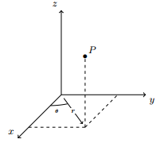

Michigan State University
Math 234 – Spring 2024
Lecture notes
1 Cylindrical coordinates
Cylindrical coordinates represent a point \(P(x,y,z)\) in space by ordered triples \((r,\theta , z)\) in which \((r,\theta )\) is the polar coordinate of \((x,y)\).
\(z\) remains unchanged.
\begin{equation*} \fbox{$ \qquad \begin{cases} \begin{aligned} x & = r\cos \theta \\ y & = r\sin \theta \\ z & = z \end{aligned}\end{cases} \qquad \text{and}\qquad \begin{cases} \begin{aligned} r^2 & = x^2 + y^2 \\ \frac{y}{x} & = \tan \theta . \end{aligned}\end{cases} \qquad $} \end{equation*}Example. Change \((x,y,z) = (-1,1,1)\) into cylindrical coordinates.
Proof\(r^2 = x^2+y^2 = 2\), thus \(r=\sqrt{2}\). Then \(\tan \theta = \frac{y}{x} = \frac{1}{-1} = -1\), thus \(\theta = \frac{3\pi }{4}\). Hence
\[ (-1,1,1)\mapsto \left(\sqrt{2}, \frac{3\pi }{4}, 1\right). \]Example. Change \((\sqrt{2}, 3\pi /4, 2)\) to Cartesian coordinates.
ProofWe have \(x = r\cos \theta = \sqrt{2}\times \left(-\frac{1}{\sqrt{2}}\right) = -1\) and \(y = r\sin \theta = \sqrt{2}\times \left(\frac{1}{\sqrt{2}}\right) = 1\). Thus
\[ (\sqrt{2}, 3\pi /4, 2)\mapsto (1,-1, 2). \]
2 Spherical coordinates
\((x,y,z)\mapsto (\rho , \theta ,\phi )\), where basically we repeat the polar coordinate first, and the height \(z\) is tracked via the variable \(\phi \), the angle with \(Oz\). Note that the order is sometime written as \((r,\phi , \theta )\). Pay attention to the order!
The relations, still introducing an extra variable \(r\) as in polar coordinates (it will be very useful)
\begin{equation*} \fbox{$ \qquad \begin{cases} \begin{aligned} x & = (\rho \cos \phi ) \cos \theta \\ y & = (\rho \cos \phi ) \sin \theta \\ z & = \rho \cos \phi \end{aligned}\end{cases} \qquad \text{and}\qquad \begin{cases} \begin{aligned} \rho ^2 & = x^2+y^2+z^2 \\ r & = \rho \sin \phi \\ \frac{r}{z} & = \tan \phi \end{aligned}\end{cases}, \qquad \theta \in [0,2\pi ], \phi \in [0,\pi ] \qquad $} \end{equation*}![\includegraphics[scale=0.7]{content/09-spherical.png}](images/img-0002.png)
If \(\phi {\gt} \frac{\pi }{2}\) then \(z{\lt}0\), the angle make \(P\) lies below the \(Oxy\)-plane.
Example. Convert \((1,1,0)\) into spherical coordinate.
Proof\(\rho ^2 = x^2+y^2+z^2 = 2\), thus \(\rho = \sqrt{2}\). Now \(z = \rho \cos \phi \) implies \(0 = \sqrt{2} \cos \phi \), thus \(\phi = \frac{\pi }{2}\). Finally \(\tan \theta = \frac{y}{x} = 1\), thus \(\theta = \frac{\pi }{4}\) (since \(x{\gt}0, y{\gt}0\)). We conclude
\begin{equation*} (1,1,0) \mapsto \left(\sqrt{2}, \frac{\pi }{4}, \frac{\pi }{2}\right) = (r,\theta , \phi ). \end{equation*}Example. True/False: Consider the point with spherical coordinates \((\rho , \theta ,\phi )=(4, \frac{3\pi }{4}, \frac{5\pi }{7})\). The product of the Cartesian coordinates, \(xyz\), is positive.
ProofTrue. We see that \(\phi = \frac{5\pi }{7} {\gt} \frac{\pi }{2}\), thus \(z{\lt}0\). Now \(\theta = \frac{3\pi }{4}\), thus \(x{\gt}0, y{\lt}0\) (draw a picture). Therefore \(xyz{\gt}0\).
3 Practice
Example. Convert the equation \(z = \sqrt{x^2+y^2}\) into cylindrical coordinates and spherical coordinates.
ProofCylindrical: \(z = r\).
Spherical: \(\rho \cos \phi = r = \rho \sin \phi \), thus \(\tan \phi = 1\), thus \(\phi = \frac{\pi }{4}\) is the equation of the cone!
Example. Identify the surface whose equation is \(z = 4-r^2\) in cylindrical coordinate.
ProofWe have \(z = 4 - x^2-y^2\), thus this is a elliptical paraboloid (one term of 1st order, two terms of second order having the same sign).
Example. Convert to \(x,y,z\) the surface: \(\rho = \sin \phi \cos \phi \).
ProofWe can do
\begin{equation*} (x^2+y^2+z^2)^\frac {3}{2}= \rho ^3 = (\rho \sin \phi ) (\rho \cos \phi ) = rz = z\sqrt{x^2+y^2}. \end{equation*}The answer is \((x^2+y^2+z^2)^\frac {3}{2} = z\sqrt{x^2+y^2}\).
Example. Identify the surface whose equation is: \(\rho = \sin \phi \cos \theta \).
ProofWe can do
\begin{equation*} x^2+y^2+z^2 =\rho ^2 = (\rho \sin \phi ) \cos \theta = r\cos \theta = x \end{equation*}Therefore
\begin{equation*} \left(x-\frac{1}{2}\right)^2 + y^2 +z^2 = \frac{1}{4} \end{equation*}This is a sphere centered at \((\frac{1}{2},0,0\) with radius \(\frac{1}{2}\), this is a ellipsoid.